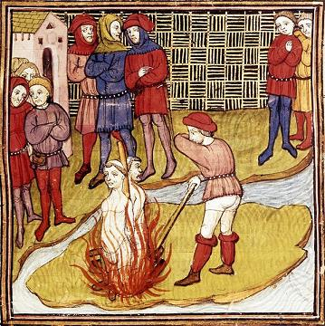

Les trois moines rouges
The three Red Friars
Dialecte de Cornouaille
|
- par Mme de Saint-Prix: Ms de Landévennec N°2 folios 34-38: "Ar menec'h ru"; - par De Penguern, t. 89: "Jakobin Redon" (Taulé, 1851) et dans la revue Gwerin 5, p. 199, 1963; - par Luzel, "Gwerzioù", t.1, pp.272-285 "An daou vanac'h" (Plouaret, 1849, Pleubihan, 1864); - par Herrieu, "Gwerzenneu ha sonenneu Breiz Izel", "Er verh laeret" (Kervignac); - par Milin, revue Gwerin 1: "Ar seizh manac'h"; - par Pérennès, "Annales de Bretagne" XLV (1938): "Plac'h yaouank Kemper" (Plogastel - Saint-Germain, 1936). |
 |
- by Mme de Saint-Prix: Landévennec MS N°2 folios 34-38: "Ar menec'h ru"; - by De Penguern, t. 89: "Jakobin Redon" (Taulé, 1851) and in the periodical Gwerin 5; - by Luzel, "Gwerzioù", t.1, "Andaou vanac'h" (Plouaret, 1849, Pleubihan, 1864); - by Herrieu, "Gwerzenneu ha sonenneu Breiz Izel", "Er verh laeret" (Kervignac); - by Milin, periodical Gwerin 1: "Ar seizh manac'h"; - by Pérennès, "Annales de Bretagne" XLV (1938): "Plac'h yaouank Kemper" (Plogastel - Saint-Germain, 1936). |
Ton
(La mineur ou hypodorien)
|
D'autres mélodies ont été recueillies par Maurice Duhamel et publiées dans "Musiques bretonnes", pp. 32-32, chantées par
- mélodie 1 Maryvonne Le Flemm de Port-Blanc; - mémodie 2 Marguerite Philippe de Pluzunet (d'après un phonogramme réalisé par François Vallée); - et mélodie3 Maryvonne Nicol de Plouguiel. |
| Français | English |
|---|---|
|
1. De tout mon corps je tremble et frémis de douleur
Quand je vois cette terre accablée de malheurs. En songeant à l'horrible crime perpétré A deux pas de Quimper, cela fait une année. 2. La petite Katell Moal en chemin chantait Quand trois moines armés l'ont soudain abordée. Trois moines sur de grands chevaux, de fer bardés Lui barrent le chemin, dans leur rouge livrée 3. -Venez donc avec nous, venez, charmante enfant, Et chez nous vous aurez de l'or et de l'argent. - Avec vous, Messeigneurs, je ne veux point aller J'ai trop peur des épées pendant à vos côtés. 4. -Jeune fille, venez, nous ne vous ferons rien. - Non, Messieurs, car de vous on ne dit pas grand bien! - On entend dire assez de mal aux gens méchants. Maudites soient toutes ces langues de serpents! 5. Venez donc, mon amie, n'ayez pas peur, venez! - Je ne vous suivrai pas, dussé-je être brûlée! - Venez donc au couvent, vous y serez à l'aise! - Entrer dans ce couvent! Jamais! Qu'à Dieu ne plaise! 6. Y sont allées, dit-on, sept filles du pays De jolies fiancées qui n'en sont point sorties. - Si sept y sont entrées, vous serez la huitième!- On la jette à cheval, au galop on l'entraine; 7. Vers leur demeure ils fuient avec la pauvre enfant En travers, à cheval, sur la bouche un baillon. Sept ou huit mois plus tard, faut-il qu'on vous le dise? Les moines du couvent avaient une surprise: 8. Sept ou huit mois plus tard, ou plus, certainement - Frères, que ferons-nous de la fille à présent? - Sous terre enfermons-la! - Pourquoi pas sous la croix? - Mieux vaudrait l'enterrer sous l'autel, croyez-moi! 9. - Qu'elle soit dès ce soir sous l'autel enterrée, Où jamais ses parents ne la viendront chercher! Vers la chute du jour, le ciel soudain se fend, Que de grêle, de pluie, de tonnerre et de vent! 10. Un pauvre chevalier, tout trempé par l'orage Traversait ce soir-là ce triste voisinage. Il cherchait un asile, un abri pour la nuit, Et s'en vint au clocher de la commanderie. 11. Au trou de la serrure il met l'oeil et il voit Tout au fond de l'église un flambeau qui rougeoit Et les trois moines qui dessous l'autel creusaient Et, la fille à côté, ses pieds nus attachés. 12. La pauvre fille en pleurs implorait leur merci: - Au nom de Dieu, seigneurs, ne m'ôtez point la vie! Messieurs, au nom de Dieu, ne m'ôtez point la vie! Cachée le jour, je ne sortirai que de nuit!- 13. La lumière s'éteint quelques instants après. A la porte il resta, stupéfait, sans bouger. Puis il entend la fille au fond de son tombeau Gémir: - Pour baptiser l'enfant je veux de l'eau! 14. Puis de l'extrème onction pour moi-même le chrême, Je mourrai de grand cœur après, contente même! - Evêque de Quimper, veuillez vous réveiller! Sous un mol édredon vous êtes là couché! 15. Vous êtes là couché dans un doux lit de plumes Tandis que gît au fond d'un trou de terre dure Une femme qui veut pour son fils le baptême, Et l'huile de l'extrême-onction pour elle-même.- 16. Sous l'autel, par ordre du comte, l'on creusa On retirait son corps quand l'évêque arriva. On retira son corps de la fosse profonde. Le nouveau né couché sur son sein, dans la tombe. 17. Elle avait lacéré ses bras et sa poitrine Tenté de s'arracher le cœur, pauvre victime! L'évêque à deux genoux tomba, voyant cela Et sur la pauvre tombe amèrement pleura. 18. Trois jours, trois nuits durant on le vit qui priait A genoux sur la terre, en cilice, nu-pieds. Au bout de trois nuits, tous les moines étant là, Entre les deux flambeaux soudain l'enfant bougea! 19. Ouvrant les yeux, tout droit vers les moines marcha, Vers les trois moines rouges. Il dit - ce sont ceux-là! - On les a brûlés vifs, jeté leur cendre au vent, Pour leur crime leurs corps subit ce châtiment! Trad.Ch.Souchon (c) 2004 |
1. O, my whole body quakes and quivers, when I must
Think of the dreadful things that happen on the earth, Think of a hideous crime perpetrated anew Not far from Quimper Town, hardly a year ago. 2. Little Katell Moal sang along her way, when She met three friars who were armed from foot to head . On huge chargers that were harnessed every way, They stopped her getting past, in their red livery. 3. - Come along with us to our convent, gracious girl, There you will never lack of siver or of gold. - To follow you, my lords, I am sure, I don't want I'm afraid of your swords that here from your sides hang. 4. - We shall do you no wrong, young girl, now, come along. - I shan't go, Lords, about you they say so much wrong ! - Bad people, aye, are heard saying bad things enough. Thousand times be they cursed all these perfidious tongues! 5. Come on, don't be afraid! - No, with you I would take Not a step, even if I'd be burnt at the stake! - Come on to the convent! You shall be there at ease! - To this convent I am not going, if you please! 6. Seven young country girls went there, so I was told, Fair betrothed girls that no one since then did behold. - If seven girls entered, you will be the eighth one! - They throw her on a horse, and off with her they rush. 7. At a gallop riding to their convent they rush. She lies across the horse with a gag on her mouth. Hardly more than seven or eight months afterwards They had a big surprise that was for them awkward. 8. Hardly more than seven or eight months afterwards: - Tell me, what shall we do with this girl, my brothers? - Let us shut her away in a hole in the earth! - Under the cross! -No, the altar could hide her berth. 9. - Right, let her be burried underneath the altar, No relation of hers ever looks there for her! At dusk, the whole sky splits suddenly asunder: Pouring rain, heavy hail and most awful thunder! 10. Now, a poor knight drew near and was soaked to the skin And he sought a shelter from the rain and the wind. And he sought a shelter, a shelter for the night, Till before the church of the convent he arrived. 11. He peeped through the keyhole of the door and he saw In the rear of the church a light that was aglow And to the left three monks dug under the altar; On the side a girl lay whose feet were bound and bare. 12. The poor, illfated girl did in vain mercy claim: -Pity, leave me alive, gentlemen, in God's name! Gentlemen, in God's name, pity, leave me alive! I shall go out by night and by day I shall hide!- 13. When the light at last went out after a moment He remained at the door, full of deep amazement, . Then he heard the girl who was moaning in her grave: - Could I baptism's holy oils for my child have! 14. And the Extreme Unction I would like for myself, Then with satisfaction I would die and relief! - Bishop of Cornouaille, wake up and raise your head! While you are sleeping in your cosy, down-filled bed, 15. While you are all asleep on this sweet, cosy berth There is a girl who moans in a hole in the earth, Baptism's holy oils for her child she must have, And the Extreme Unction for her who lies in grave.- 16. By order of the Count they dug out the altar And the poor girl was freed, when the bishop came there. They dug the poor young girl out of this dark, deep tomb Her little child with her who slept on her bosom. 17. She had lacerated her two arms and her breast, Her white breast to rip off her heart out of her chest! When the Lord Bishop had perceived this dreadful hide He went down on his knees and on the tomb he cried. 18. Three nights and three days long, his knees on the cold ground He prayed there, barefooted and in a horsehair gown. And the third night at last, all the friars approach; Lo and behold, the child stirs underneath the torch! 19. Opens its eyes, rises, heads for the three friars, Straight away and it says -those are our murderers!- They were burnt at the stake; their ash went with the wind... The punishment for them who had dreadfully sinned! transl. Ch.Souchon (c) 2004 |
Cliquer ici pour lire les textes bretons (versions imprimée et manuscrite).
For Breton texts (printed and ms), click here.

|
Résumé
Un fait divers que La Villemarqué fait remonter au XIIIème siècle: A Quimper une jeune fille est séquestrée par 3 moines "rouges" (pas des prêtres ouvriers, mais des Templiers). Quand elle tombe enceinte ils l'enterrent vive avec l'enfant. L'évêque fait ouvrir le tombeau. L'enfant revient à la vie et dénonce ses tortionnaires qui sont condamnés au bûcher. Templiers, Dominicains ou Franciscains? Les templiers étaient un ordre de moines - soldats fondé en 1118, pour protéger le Saint Sépulcre après la 1ère croisade, ainsi que les pèlerins qui se rendaient à Jérusalem. Très vite ils jouèrent un rôle décisif dans la politique internationale et accumulèrent d'immenses richesses, ayant obtenu le droit de lever l'impôt dans les pays qu'ils dominaient et d'exercer la fonction de banquiers. Leurs succès excitèrent la jalousie et l'avidité des monarques d'Europe qui, à cette époque, s'efforçaient d'étendre leur mainmise sur la monnaie et la banque. Le 13 octobre 1307 tous les Templiers de France furent arrêtés simultanément par les sbires de Philipe le Bel, pour être ultérieurement soumis à la torture sous le chef d'accusation d'hérésie au sein de l'Ordre. Sous la torture certains Templiers "reconnurent" des pratiques homosexuelles, le culte d'"une tête barbue" ("Baphomet") et toutes sortes d'actes impies tels que celui dont il est fait état dans cette gwerz. La même complainte a été collectée par F-M. Luzel sous plusieurs versions dans lesquelles les assassins sont, tantôt des "Jacobins", nom par lequel on désignait les Dominicains à Paris, tantôt des "Franciscains", tandis que leur supérieur est tantôt un "vicaire", tantôt un "vicaire général", parfois même un "cardinal"! L'horrible fait divers à l'origine de cette "gwerz" doit être beaucoup plus récent que ne l'imagine La Villemarqué: pour attirer chez eux leur victime, les moines feignent de vouloir lui "expliquer les tableaux, les mystères excellents" ("d'eksplikañ an taolinier, ar misterioù ekselant"). Cela renvoie clairement aux "taolennoù", aux "Tableaux de Mission" inventés vers 1614 par Michel Le Nobletz et abondamment utilisés par les Missions de Bretagne à partir de 1670. Le supplice infligé aux assassins dans la deuxième version (bûcher, précédé de l'amende honorable) permet de dater cette horrible histoire avant 1780, date à laquelle Louis XVI abolit la torture en France. L'attitude crâne qui est prêtée au "grand" moine, fait penser à Savonarole, Dominicain lui aussi, mort sur le bûcher en 1498. Une variante de la première version parle de décapitation (sort réservé aux nobles), puis de pendaison, le supplice des roturiers. Le bûcher était réservé aux hérétiques, aux sorciers et aux sodomites... Dans la version publiée dans les "Annales de Bretagne", tome 45 1-2, page 251, en 1938 par le Chanoine H. Pérennès , "Plac'h Yaouank Kemper" (La jeune fille de Quimper), recueillie auprès de Marie-Jeanne Bosser, 96 ans, originaire de Plogastel-Saint-Germain, à L'Hôpital de Quimper, le 3 novembre 1936, il est question de deux jeunes gens qui enterrent leur victime et son enfant "'tal ilis Sant-Jozef" (près du fronton de l'Eglise Saint-Joseph). Leur manège est observé par un mendiant qui était logé "e kornig ar vered" (dans un petit coin du cimetière) et qui le matin suivant alerte le père de la malheureuse. Les assassins ont un complice, le bedeau ("kloncher") auquel ils empruntent une pioche pour soulever une pierre tombale. Le chanoine nous apprend que Saint Joseph à Quimper était la chapelle du couvent des Cordelières ou Franciscaines urbanistes, fondée en 1650 et supprimée en 1745 (puis remplacée en 1868 par une chapelle des Jésuites). Le manuscrit de Keransquer L'examen du premier carnet de Keransquer, fait apparaître les différences ci-après entre les textes collectés et la ballade du Barzhaz: Quant à l'épée des moines elle apparaît effectivement dans la version B. C'est sans doute ce détail qui a mis en branle l'imagination de La Villemarqué et lui a fait penser aux Templiers. Un des textes collectés par Luzel parle plus prosaïquement de couteau. Cependant, ces "moines rouges" sont cités au début de la version recueillie par Mme de Saint-Prix (dans la suite de l'histoire, ils deviennent des "Jacobins":
L'affaire de Marseille Selon Pierre Le Roux qui publia à ce sujet, dans la "Nouvelle Revue de Bretagne" en 1951 (pp. 93 à 98), un article intitulé "Les trois moines rouges du Barzhaz Breizh", cette complainte rappelle, par plus d'un détail, une affaire jugée vers 1678 , dans laquelle furent impliqués un certain Chasteuil (ou Chastuel) (1625-1677), prieur des Carmes au couvent de Marseille , qui aurait séquestré dans une cellule une jeune fille, puis, l'ayant rendue mère, l'aurait assassinée et enterrée de nuit dans l'église, avec l'aide d'un frère nommé Laroque ou Laroche . Leur crime fut dénoncé par un pèlerin qui était couché dans l'église au moment où ils procédaient à l'ensevelissement de leur victime. Laroche put s'échapper, mais Chasteuil fut jugé et condamné à mort. Au moment de son exécution, il fut délivré par une bande de malandrins à la solde d'un certain Louis de Vanens (1647-1691), soi-disant lieutenant des Galères qui sera plus tard cité à comparaître dans la fameuse "Affaire des Poisons" où Chasteuil aurait joué un rôle important (la procédure révéla que ledit Chasteuil aurait également empoisonné son protecteur, le Duc de Savoie en 1675). Alors que le prélat cité par La Villemarqué dans son "Argument", est Antoine Morel qui fut évêque de Quimper de 1290 à 1321, comme le "Clerc de Rohan" , cette gwerz s'inspirerait donc de complaintes françaises qui auraient fourni aux auteurs bretons une trame où se mêlent les éléments de procès criminels datant de la fin du 17ème siècle et localisés dans le sud de la France. Cependant, comme le reconnaît le très critique Francis Gourvil lui-même (P.441 de son "La Villemarqué"), Et il cite le cas de l'Abbaye du Relec en Plounéour-Ménez, dans le Finistère, dans laquelle les habitants des villes proches de Berrien et de La Feuillée s'obstinent à voir une commanderie de Templiers, alors qu'elle a toujours abrité des Cisterciens dont l'habit noir et blanc ne rappelle en rien le manteau rouge des Chevaliers du Temple. Moines rouges et Île Verte Dans une longue note relative à ce chant, Luzel se livre à d'intéressantes confidences: "... Dans la pièce du Barzaz-Breiz, la scène se serait passée auprès de Quimper... au lieu où...l'on dit traditionnellement qu'exista autrefois une commanderie de l'ordre du Temple. Il n'est pas prouvé cependant que cette attribution ne soit pas erronée, et M. de Blois [de la Calande] s'exprime clairement dans ce sens... : " Ce ... n'est autre chose que la grande salle du manoir de Prat-an-Roux. Cette terre a donné son nom a une ancienne famille, ayant pour armes une croix pattée d'azur [qui a] fait croire que Prat-an-Roux avait appartenu aux Templiers... Cette pièce est, a peu près, la seule de ce genre que j'aie recueillie contre les moines. J'ai cependant fait bien des recherches pour trouver ... la ballade...connue sous le nom de Les moines de l'Ile-Verte , et qui a été publiée dans l'Athenœum français (année 1854). J'ai séjourné plusieurs jours dans le pays où l'on place la scène,... je n'ai même pas trouvé un seul vers. Et pourtant des couplets tels que ceux-ci étaient bien de nature à se graver dans la mémoire du peuple...:
Anatole Le Braz, dans son Introduction aux "Chansons populaires de Basse Bretagne", nous apprend le nom du soi-disant mystificateur: René Kerambrun que l'on accuse sans preuve, le collaborateur d'un autre collecteur de chants bretons, M. de Penguern. On pardonnera à Luzel de sous-entendre que La Villemarqué, lui, n'était pas de bonne foi! . .
|
Résumé
A trivial event that La Villemarqué dates back to the 13th century: In Quimper a young girl is sequestered by three "red monks" (Knights Templar). When she becomes pregnant, they bury her alive with her child. The bishop lets open the grave. The child comes back to life and denounces its torturers who are condemned to be burnt at the stake. Knights Templar, Dominicans or Franciscans? The Knights Templar were knights of a religious military order, established in 1118, to protect the Holy Sepulchre after the 1st crusade and the pilgrims who went towards Jerusalem. Rapidly they played an outstanding part in the international politics and gathered immense riches, being permitted to levy taxes in the countries they controlled and to act as bankers. Their success attracted the jealousy and greed of many monarchs of Europe, who were at this time seeking to control money and banking. On October 13, 1307 all the Knights Templar in France were simultaneously arrested by agents of Philip the Fair, to be later tortured into admitting heresy in the Order. Under torture some Knights "admitted" to homosexual acts, the worship of a "bearded head" ("Baphomet") and all sorts of impious acts such as the one referred to in this lament. The same lament was collected by F-M. Luzel in several versions, where the murderers are referred to alternately as "Jacobins", the name used in Paris for "Dominicans", and as "Franciscans", whereas their superior is named "vicar" or "vicar general" or even "cardinal"! The horrid event this lament has its origins in must be far more recent than assumed by La Villemarqué: To lure the girl into their cells, the monks pretend to "explain her the excellent picture tables of the mysteries" ("d'eksplikañ an taolinier, ar misterioù ekselant"). This clearly points at the "taolennoù", the "Mission tables" devised as from 1614 by Michel Le Nobletz and freely used by missionaries to Brittany after 1670. The torture inflicted on the murderers in the 2nd version (burning preceded by amends making) allows us to date this horrible story before 1780, when torture was abolished in France by King Louis XVI. The proud attitude ascribed to the "tall" monk reminds us of Girolamo Savonarola, also a Dominican, who was burnt at the stake in 1498. A variant to the 1st version mentions beheading (a "privilege" of nobility), then hanging, the way commoners were put to death. Burning was reserved for heretics, witches and sodomites... The version published in "Annales de Bretagne", Book 45 1-2, page 251, in 1938 by Canon H. Pérennès , titled "Plac'h Yaouank Kemper" (The young girl of Quimper), recorded from the singing of the 96 year old Marie-Jeanne Bosser from Plogastel-Saint-Germain, at Quimper hospital, on 3rd November 1936, tells us of two young lads who interred their victim and her child "'tal ilis Sant-Jozef" (near the front of the Saint-Joseph Church). Their ploy was spied by a beggar who housed "e kornig ar vered" (in an angle of the churchyard) and warned the next morning the father of the unfortunate girl. The murderers had an accomplice, the bell ringer ("kloncher") from whom they borrowed a mattock to lift a tombstone. The Canon states that Saint Joseph in Quimper was the chapel of the convent of Urban Franciscan nuns, built in 1650 and demolished in 1745 (it was replaced in 1868 by a Jesuit chapel). The Keransquer manuscript In scrutinizing the first Keransquer collecting book, the following differences between the collected versions and the printed text will appear: As for the sword of the friars, it really appears in version B. Very likely this occurrence set La Villemarqué's imagination working towards a story involving Knights Templar. Luzel's texts more prosaically mention a "knife". However, these "red friars" are mentioned in the first stanza of the version collected by Mme de Saint-Prix (further down in the narrative, they become "Jacobins":
It is the merchant who is summoned to confound the murderers and for the child's christening he and his sister are appointed as godparents. The Marseilles case According to Pierre Le Roux who dedicated, in "Nouvelle Revue de Bretagne" in 1951 (pp. 93 à 98), an essay titled "The three Red Friars in the 'Barzhaz Breizh'" to this topic, this lament reminds us by many details, of a judiciary case handled around 1678 , involving a named Chasteuil (or Chastuel) (1625-1677), Prior of the Marseilles White Friars' convent , who was said to have confined in his cell a girl who resulted with child and whom he murdered and buried one night in the convent's church, with the help of a friar named Laroque or Laroche . Their crime was exposed by a pilgrim who was asleep in the church when the two were digging the grave for their victim. Laroche managed to escape, but Chasteuil was tried and sentenced to death. But during the execution, he was relieved by a horde of bandits in the pay of a named Louis de Vanens (1647-1691). This alleged Lieutenant of the Galleys was later on summoned to appear in connection with the famous "Affair of the Poisons" in which Chasteuil was involved as a main protagonist (the proceedings disclosed that the said Chasteuil also had poisoned his patron, the Duke of Savoy in 1675). Therefore, while the prelate mentioned by La Villemarqué in his "Argument", is Antoine Morel who was bishop of Quimper from 1290 to 1321, like the "Clerk Rohan" song, the present gwerz was possibly inspired by French laments that had provided the Breton bards with a plot intertwining elements from late 17th century criminal trials located in the South of France. However, as the very critical Francis Gourvil himself recognizes (on page 441 of his "La Villemarqué"), And he quotes the case of the Abbey of Relec near Plounéour-Ménez, in the département Finistère, which the inhabitants of the nearby villages Berrien and La Feuillée persist in considering former Knights Templar headquarters, though it always harboured Cistercians whose black and white robes reminds us by no means of the crimson capes worn by the Knights Templar. Red friars and Green Island In a note to this song Luzel indulges in interesting confidences: "... In the Barzaz Breiz song, these events took place in a suburb of Quimper where tradition has it that certain ruins were a Knights Templar fortress. Nothing backs up this theory. M. de Blois [de la Calande] clearly asserts the contrary: "This is in fact the main hall of Prat-an Roux Manor. This land had given their name to an old family, whose coat-of-arms included a "cross pattée" that was mistaken and led to assign Prat-an-Roux to the Order of the Temple... . This is practically the only song against monks I found in my investigations. And yet I have been looking for months for the ballad known to some people as "The Monks of the Green Island", that was published in the 1854 copy of the "Athenœum Français". I even stayed for a certain time in the area where the story is located, without encountering a single verse of it. And yet such lines were likely to become easily imprinted on the memories of the folks:
-I have raped more girls Than are now looking at me! I committed more sacrileges Than are threads in my shirt. And before I die I call My most terrible curse on Brittany! |
Now that I know the clue to the riddle and the name of the author of this pastiche, I don't wonder any more at my complete failing. The real writer of this piece who has both talent and a gift for imagining stories, knew that I was engaged in collecting folk tales and songs. He often would recite these lines and asked me blandly smiling: - Did you find this piece? -No, said I, but I go on searching and I shall find. - Search as you will, you shan't find! - I was disappointed, almost ashamed to find that others could gather so beautiful old songs, whereas I found nothing nearly so perfect. I went on searching, I asked blind beggars, flax spinners, tailors, clog makers... I would recite to them the beautiful verses I had learnt by heart from a book that I used to profoundly admire, the Barzhaz Breizh , but invariably they answered: "Never in our lives did we hear anything approaching."
I nearly doubted that my enquiries were of any use or had any merit. The modest "gwerz" and "sôns" (laments and joyful songs) that I committed to writing while one of our peasants was singing seemed to me so colourless, so awkward, so rustic in comparison with the beautiful ballads of my friend and of the Barzhaz Breizh! And yet I found to them a ineffable charm. So I can state in all sincerity that my book is a trustworthy work, even if it is the only merit it may claim. All the songs included here, without exception, may still be heard in the country. In Lower Brittany, nobody would dare to enclose in his grave an element of oral tradition or a song that was handed down to him from generation to generation..."
Anatole Le Braz, in his Introduction to the "Folk songs of Lower Brittany" he wrote in cooperation with Luzel, gives away the alleged "forger's" name: René Kerambrun, a collaborator to another collector of Breton songs, M. de Penguern.
Now, shall we pardon Luzel for suggesting that La Villemarqué, unlike him, was not trustworthy?
.
.